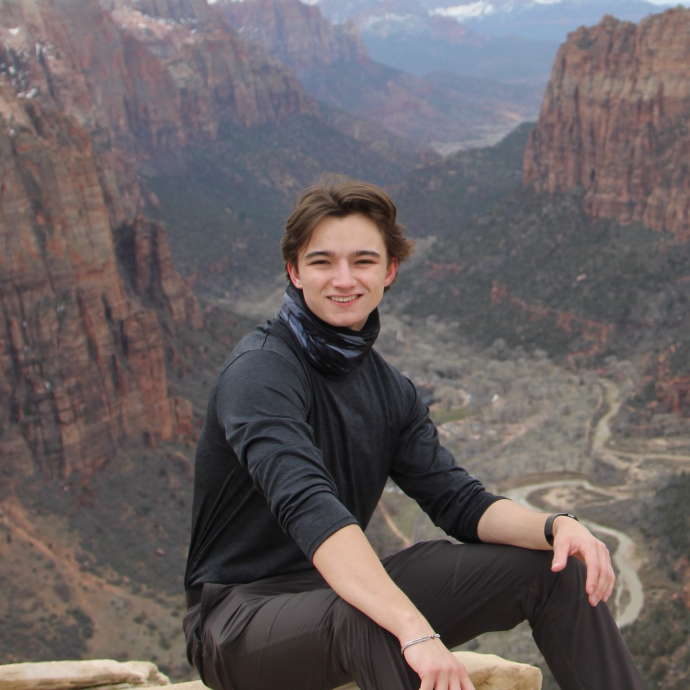
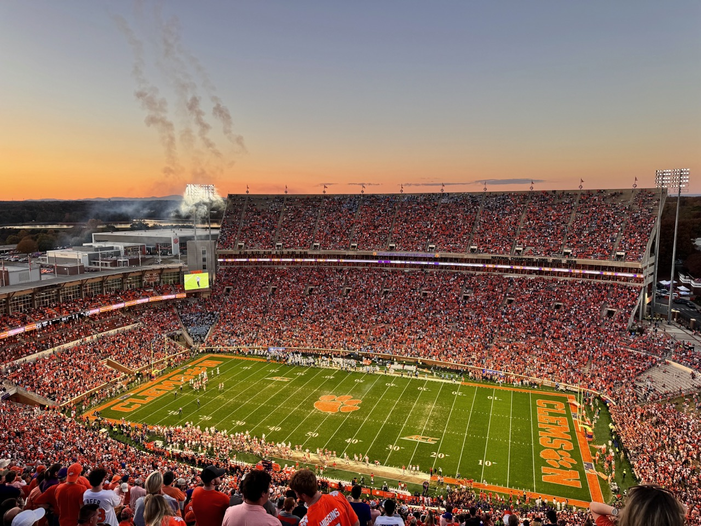
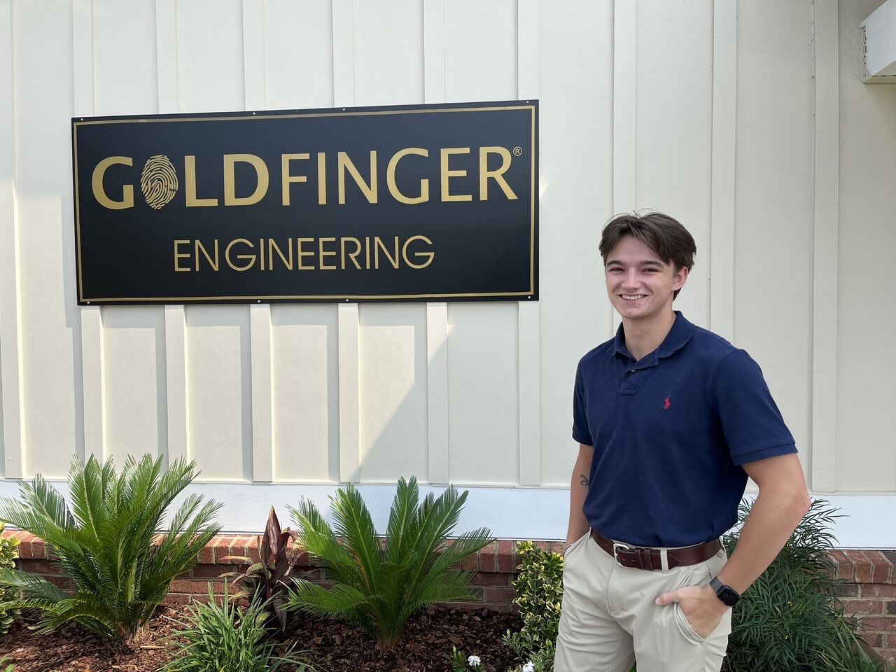

About Me
Hi, I'm Russell Welch, a 21-year-old enthusiast from the sunny shores of Charleston, South Carolina. My journey into the world of technology began early, running game servers and modding games in middle school, which laid the foundation for my passion for coding. This passion for creation and innovation led me to Clemson University, where I'm pursuing a Bachelor of Computer Science.
My education was furthered by a rigorous four-year IT program in high school, which concluded with a TestOut PC Pro certification. Post-graduation, I had the opportunity to work with CCSD's IT department, setting up new networks and performing general IT tasks. This hands-on experience was invaluable and solidified my decision to delve deeper into the field of technology.
The following summer, I started as an IT intern at Goldfinger Monitors, but software development was where I saw my future. After proving my abilities on a project with the company's POS system, I transitioned into the role of a Software Engineer Intern. Remote work during the subsequent year allowed me to focus on identifying and solving significant issues with our data collection and communication systems.
My proposals for these systems led to the development of Goldfinger MANAGE, a modular application designed to streamline company operations. As the Lead Software Engineer, I now oversee the continuous development and improvement of this system, ensuring it scales with the company's growth.
My Path to Software Engineering
It was during my time at Goldfinger Monitors that I saw the potential for significant improvement in our internal processes. MANAGE was born out of a need for better data consistency and workflow streamlining. From ideation to deployment, I led the project, pushing our data management from Excel to a modern web application ecosystem.
